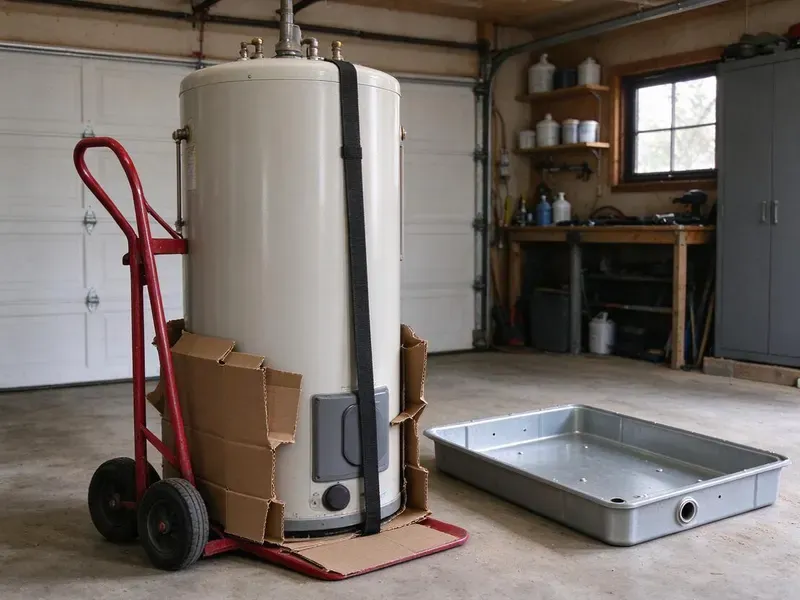

Sewage Ejector Pump Installation in Concord, NC
Adding a lower-level bath? HFN Plumbing roughs in the ejector basin in Concord, NC before the slab is patched.
- Licensed North Carolina Plumbers
- Nearby Crews
- Grinder Systems Available
- Water Tested
Pump Trouble in Concord, NC?
Permit, basin, vent and alarm are all on us.
Below-Grade Plumbing That Pumps Right in Concord, NC
HFN Plumbing installs sewage ejector pumps for fixtures that sit lower than your main sewer or septic line. A sealed basin goes below the slab, a pump rated to pass two-inch solids goes in it, and we add a check valve, a shutoff and a roof vent. We test with water. We cycle each system several times before packing up.
Work we handle every week:
- Grinder pump systems for pressure sewer and long runs
- Pit sizing and roof venting for new systems
- Sealed basins with gas-tight lids and a separate vent

Additional Plumbing Installation Services in Concord, NC
We install water heaters, pumps, lines, and fixtures across Concord, NC with precision workmanship that meets every local code.


Customers
Why Choose HFN Plumbing for Sewage Ejector Pump Installation in Concord, NC?
Our plumbers size an ejector by lift, run and fixture count, not by what is on the truck. A pump that has to push waste 9 feet up and 40 feet across needs a different curve than one lifting 6 feet straight to a drain right overhead. We check the curve. A matched curve means fewer starts and a motor that lasts.
- Proven Brands, Zoeller and Liberty pumps with long track records.
- Alarm Protection, An alarm on the basin warns you before a backup.
- Right Pump, Ejector, grinder or macerator, matched to the job.
Citywide Coverage
Wherever your property sits in Concord, high on a slope or below the street sewer, we can design an ejector system that works. Septic homes are covered too, with the discharge tied into the main drain ahead of the tank so the septic treats it like any other waste. Septic needs care.
Experienced Team
Every plumber at HFN Plumbing handles both installs and repairs. The same person who replaces a float switch on a Tuesday might lead a full basement bathroom install the next week, so they understand how basin size and valve placement turn into easy or hard service calls years later. It shows in the work.
Safety-First Approach
Every ejector install gets a full water test before we leave. We run water through the fixtures, confirm the pump cycles at the right levels, check discharge and check valve for leaks, and trip the alarm for you. You will know the sound.
Trusted Certified Concord Plumbing Services Professionals
At HFN Plumbing, we are proud to offer certified plumbing services throughout Concord, NC. Those papers on the wall mean something. Every repair, install and maintenance visit follows strict safety and quality rules, and the plumbers doing the work carry recognized industry credentials.
Call Us Now PHCC Plumbing Contractor Recognition
PHCC Plumbing Contractor Recognition Better Business Bureau (BBB) Accreditation
Better Business Bureau (BBB) Accreditation Angi Certified Pro
Angi Certified Pro ISO 9001 Quality Management Certification
ISO 9001 Quality Management CertificationSewage Ejector Pump Installation in Concord, NC
Liberty Pumps Sewage Ejector Pump Installation in Concord, NC
Liberty builds single and dual pump packages that arrive with the basin, pump, lid and fittings matched. That speeds up new installs, and their wide-angle float switches are less likely to hang up on the basin wall than older tethered floats, which is one of the most common reasons a pump fails to start. Stuck floats are common.

Upflush and Macerating Toilet Systems in Concord
Macerating systems like Saniflo let you add a toilet and sink without breaking the concrete floor. The unit sits behind the toilet, grinds the waste and pumps it through a small discharge line, often three-quarter inch or one inch, up to the nearest drain, which makes it a good fit for a small basement half bath. They need a vent too.
Ejector Pump Replacement in Concord
Ejector pumps tend to run 7 to 10 years, depending on how often they cycle and what gets flushed. Watch for constant running, a hum or grind, repeated alarms and odor at the pit, since any of them means trouble is close. Old switches fail first.
Zoeller Sewage Ejector Pump Installation in Concord
Zoeller's sewage line runs from light residential to heavy duty, in cast iron with tethered or vertical float switches. We pick the model by horsepower and pump curve for your lift, and a typical basement bathroom lands on a four-tenths or half horsepower unit with two-inch solids handling. Bigger lifts need more.
Cost-Effective Sewage Ejector Pump Upgrades in Concord, NC
Upgrading an old ejector does not always mean a new basin. If the basin is sound, we can swap in a better pump, replace the old swing check with a new one, add a full-port shutoff and install a high water alarm, which covers most of what a new system offers for a fraction of the cost. We tell you if the basin is done.
Sump Pump vs. Sewage Ejector Pump Installation in Concord
Sump pumps and ejector pumps seem similar at first but do very different jobs. A sump pump moves groundwater from a perimeter drain to the yard, while an ejector moves sewage from toilets and sinks to the sewer, and the ejector basin has to be sealed and vented because of the gas. They are not interchangeable.
Grinder Pump Installation in Concord
Grinder pumps chop waste into a fine slurry first, which lets them push through small pipe over long distances. A grinder makes sense when the sewer is distant, uphill or pressurized, such as a pressure sewer where each home pumps into a shared main. They cost more. For a basement bath near the drain, a standard ejector usually works.

Laundry and Wet Bar Ejector Pumps in Concord, NC
Below-grade laundry rooms and wet bars send gray water down that still needs to be lifted to the sewer. A smaller laundry tray pump or a compact ejector can handle it, sized for the 15 or more gallons a washer dumps at once, with a lint filter so fibers do not wrap the impeller. Lint kills small pumps.
Ejector Pump Installers Near You in Concord, NC
Our plumbers know how permits usually go in Concord, NC, which keeps new ejector systems on schedule. New basins need a rough-in inspection with the vent and drains exposed, so we time the concrete patch around the inspector's visit rather than pouring early and cutting it back open. It saves a day.
Typing sewage ejector pump installation near me into a phone turns up plenty of options. Ask each one whether the basin is vented through the roof, whether the quote includes a check valve and shutoff, and whether an alarm is part of the price, because those answers tell you more than a star rating. Our answer is yes to all three.
HFN Plumbing at a Glance
- Fully licensed plumbing team covering Concord, NC
- 24/7 emergency service with same-day scheduling
- Upfront, flat-rate pricing before work begins
- 4.8-star rated by 840+ North Carolina customers
Concord Map
Concord Information
- Population
- 110,119
- Area codes
- 704/980/336
- Service area
- Concord and towns within a 40 mile drive
- Nearby
- Kannapolis, Huntersville, Charlotte, Mooresville
Most ejector pumps last 7 to 10 years, and a high water alarm is the cheapest way to hear about a failure before it backs up.
Expert Services
Reach out to HFN Plumbing for honest, reliable plumbing from people who know the trade in Concord, NC.
Our Specialized Plumbing Services in Concord, NC
At HFN Plumbing, we handle the full list of plumbing services across Concord, NC. We go from leak detection all the way to full system installations, for homes and commercial buildings, and we do it quickly at a fair price. Here are the core services we offer:


How an Ejector Job Runs in Concord, NC
You get a written price first, then the work starts in Concord, NC.
In-Home Estimate
Call (980) 364-4317 to set up an estimate. We size the pump and price the job in writing.
Install the System
We install the basin, pump, check valve, shutoff and vent. We patch the slab after the inspector signs off.
Test and Inspect
We run the system through several cycles and test the alarm. Inspection follows.
Frequently Asked Questions About Sewage Ejector Pump Installation in Concord
Many Concord, NC installs come in between $2,500 and $6,000, depending on pump type, basin size and floor work. Grinders and duplex setups cost more, and those items get their own lines on the quote so the money is easy to follow. Every price is in writing.
Wipes, paper towels of any kind, feminine products, grease and cat litter. Those clog pumps and cause early failure.
Sump pumps remove groundwater or seepage, while ejectors handle sewage from fixtures. Ejectors pass solids and sit in sealed, vented basins.
Seven to 15 years, depending on the pump and how it is used. Short cycling, wipes, grease and an undersized basin shorten life, while a sized system checked yearly can last near the top of the range. Care adds years.
Zoeller, Liberty, Wayne and Grundfos are all on our list. We help you compare horsepower, solids handling and warranty before you pick.
Strange noises from the pit, short, frequent cycles, slow basement drains and odors. A pump that trips the alarm more than once in a few months is usually close to the end.
Pump replacements usually take two to four hours. New systems with floor excavation and venting usually take one to two days.
We advise against it. The job involves plumbing, electrical, venting and often concrete work, and a mistake on any of them can mean sewer gas in the house, a backup or a failed inspection that has to be torn out and redone. Permits usually require a pro.
What Our Customers Say About Our Plumbing Experts

Patricia H.
We had a slab leak that two other companies could not find. HFN Plumbing located it in under an hour with a listening device. They rerouted the line through the attic instead of breaking up the floor, so we kept our kitchen tile.
Slab Leak Repair · Hickory, NC
Lisa C.
Water was pouring out from under the washing machine on a holiday weekend. HFN Plumbing talked me through closing the valves over the phone and had a plumber at the house within ninety minutes. It was a burst fill hose.
Emergency Plumbing · Mooresville, NCKaren W.
After our third pinhole leak in copper, we stopped patching. HFN Plumbing gave us a written plan room by room and repiped the house in PEX while we stayed in it. The crew covered our floors every morning and cleaned up every night.
Repiping · Concord, NC
Jessica T.
We were adding a gas range in a kitchen remodel and needed a new line run from the meter. The plumber pulled the permit, ran the pipe through the crawl space, and had it inspected and approved within the week.
Gas Line Repair · Mooresville, NC
Greg S.
I manage a small strip center with six tenants. HFN Plumbing handles our annual backflow testing and fixed a recurring clog in the shared sewer line that had been backing into the nail salon. Their reports come in clean and on time.
Commercial Plumbing · Mooresville, NCAngela D.
Our sump pump quit during a storm and the water was an inch from the basement carpet. HFN Plumbing put in a new pump with a battery backup that same evening. We have had two heavy rains since. It kicked on both times.
Sump Pump · Gastonia, NC